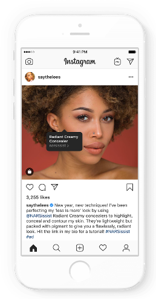

Como postar um Story no Instagram

Uma das funções mais utilizadas do app é o Stories. Ao utilizá-lo, o usuário pode criar sequências de publicações que ficam disponíveis para seus seguidores por 24 horas. Além disso, o Stories possui uma série de filtros que são garantia de publicações divertidas.
1. Para acessar essa função, o primeiro passo é clicar no símbolo de câmera fotográfica no alto da tela do app.
2. Feito isso, a tela principal da função será aberta. Há uma série de opções: na base, é possível escolher entre tirar uma foto, publicar uma imagem apenas com texto ou funções populares como o Boomerang e o Superzoom. No modo normal, um aperto no botão de disparo vai capturar uma foto, enquanto segurar um botão fará um vídeo.
3. Ainda nesta tela, é possível selecionar uma imagem da sua galeria para ser publicada (ícone à esquerda do botão de disparo), assim como utilizar um dos filtros dessa função (o ícone de carinha do lado direito).
4. Uma vez escolhida a imagem, basta avançar e, na próxima tela, haverá algumas opções. No alto, da esquerda para a direita, é possível salvar a publicação no seu celular ao apertar na seta para baixo , incluir figurinhas (como gifs animados, enquetes, localização, hashtags etc.), desenhar livremente sobre a mensagem ou escrever um texto.

DESENVOLVIDO POR:
Sebastião Rone, Amanda Felix e Vyctor Moura